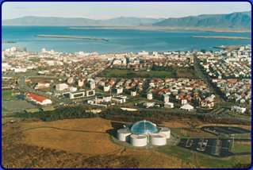

Vestmannaøerne Jeg
går ombord i et lille fly i indenrigslufthavnen i Reykjavik Vi
er kun 5 passagerer, så der er masser af plads i kabinen. Døren
til cockpittet står åben, og jeg kan se, at styrmanden er
en kvinde med langt, lyst hår. Hendes hænder hviler graciøst
på gashåndtaget, som hun langsomt skyder i bund, og flyet
accelererer ud af startbanen med kurs mod Vestmannaøerne.  Figur 1. Restaurant Perlan oven på varmtvandsbeholderne på Öskjuhlid Snart
forsvinder Reykjavik bagud, og vi flyver mod sydøst med direkte
kurs mod Vestmannaeyjar. Døren til cockpittet står stadig
åben, og nu sidder den islandske pilot i afslappet samtale med
kaptajnen på flyet. Jeg begynder at slappe af og læner mig
tilbage i sædet og kikker ned på øde lavamarker med
sprækker og revner i lavadækket. Ikke det bedste sted at
nødlande! Lige nu lader det heller ikke til at være det,
der er ved at ske. Ganske vist hopper flyet lidt op og ned, men kvinden
ved roret ser rolig ud, og det beroliger mig. Hendes ryg udstråler
kontrol. Jeg har en ubegrænset tillid til islandske piloter, fordi
de har lært at flyve under de mest omskiftelige vejrforhold i
verden. De islandske lufthavne kræver også deres, som den
på Vestmannaøerne, der ikke er så lang og ender med
et brat fald ned i havet, ligesom på Madeira. Vestmannaøerne ligger nu ret forude, og jeg kan se den nye vulkan Eldfell ved siden af gamle Helgafell, som er ældre dame på ca. 5000 år. Eldfell dukkede først op ved vulkanudbruddet i 1973. Nu kan de to keglevulkaner holde hinanden med selskab og sammen vogte over deres skaberværk.
Figur 2. Happy landed ! Jeg har været på Vestmannaøerne mange gange før, så jeg ved nogenlunde, hvad der venter mig. Det vidste jeg til gengæld ikke, da jeg landede her for første gang i sommeren 1972. Vestmannaøerne var dengang et fredeligt lille øsamfund med ca. 5000 mennesker, hvoraf flertallet havde deres indkomster fra fiskeriet.
Figur 3. Eldfell ret forude Jeg hanker op i min rygsæk og går ad vejen mod byen op mod den nye vulkan, som hedder Eldfell (Ildfjeld). Inden længe når jeg flanken af vulkanen og kan begynde opstigningen i det findelte ”koks” som mestendels består af aske udslynget under vulkanudbrudet, der begyndte natten til den 23. januar 1973 om 01.55 om morgenen.
Figur 4. Udsigt fra toppen af Eldfell mod nord Krateret er hesteskoformet og mangler kraterkanten mod nordøst. I slutningen af vulkanudbruddet brækkede det stykke af krateret af og sejlede på lavastrømmen ned mod havnen, hvor det strandede og nu står som en abstrakt skulptur i et størknet hav af lava. I bunden af krateret står et stort kors i drivtømmer. Et hvidt kors omgivet af sort slagger. En smuk tanke at anbringe et kors her. Jeg kan huske, at den gamle indgangsportal til kirkegården blev stående som en bue over asken, der begravede de døde for anden gang i 1973. På portalen stod der: ”Jeg lever og I skal leve”. Det er efterår, men der er ikke en vind, og da kraterkanten er indbydende varm sætter jeg mig ned på det lune underlag og kikker ned i kratertragten, og på det nye land, som vulkanen skabte. Jeg sidder i skjorteærmer og nyder solen, den friske luft og det varme underlag og har svært ved at forstå, at jeg for over 40 år siden stod på en grøn græsmark lige under vulkanen, hvor jeg nu sidder. Det virker helt ufatteligt, og for mig er det en gave af de helt store, at jeg kom til at opleve Heimaey både før og efter udbruddet. Jeg har da også hørt folk fra øen fortælle, at de ikke ville have undværet oplevelsen, selv om de mistede alt. Nogle vendte aldrig tilbage, men der var mange, der startede på en frisk, efter at vulkanudbruddet ebbede ud i slutningen af juni 73.
Figur 5. Vestmannaeyjar set gennem ”vulkanens øje” Jeg bliver på krateret i 4 timer og smelter sammen med den rolige vulkan, der nu slumrer efter at have udtømt alle sine kræfter. Det damper fra kraterkanten og nu, da dagen går på hæld, bliver dampen tydeligere. Jeg er ved at blive tung i hovedet og har flere gange mærket bølger af svovllugtende dampe. De begynder at gøre deres virkning, så inden jeg bliver for tung, må jeg tilbage til byen. Jeg går ned samme vej, som jeg kom op, da hældningen er for stejl på den nordøstlige kraterkant. Jeg passerer korset i bunden af krateret og går igennem den nye lava ned mod havnen. På vej igennem det ødeste øde bliver jeg passeret af en flok unge på motorcykler. De skal ud og træne på en motorcrossbane, som vulkanen så venligt har skænket dem. Vulkanen ødelagde 1/3 af byen-ca. 200 huse, som blev begravet under rødglødende lava, resten af byen blev dækket med sort aske, som i den østlige bydel dækkede husene op til skorstenene, i den vestlige bydel kun med _ meter. Kun en enkelt døde som følge af giftgas i en kælder-resten af befolkningen overlevede og kunne senere vende hjem til en ø, der på mange måder var blevet et bedre sted at leve. Øen var blevet større, havnen bedre, og der var mere læ i byen for østlige vinde. Vulkanen tog og vulkanen gav. Herren gav, Herren tog. Hele Island er blevet skabt gennem vulkanudbrud over en periode på 25 millioner år. Uden vulkanerne ville Island ikke eksistere. Et held at Amerika og Europa i sin tid besluttede at glide fra hinanden. Vestmannaøerne begyndte først deres eksistens så sent som i slutningen af sidste istid for ca. 12.000 år siden. Heldigt for islændingene, at de kun har boet her i 1000 år. Deres land vil blive større og større, men prisen er hver gang nye vulkanud-brud, og det må de lære at leve med. Jeg vandrer gennem det nye lavaland oven på den ødelagte by. Undervejs passerer jeg i en sænkning resterne af byens gamle svømmehal - knust og brændt til ukendelighed. Jeg undrer mig over, hvad tid er. Inden vi blev født, hvirvlede milliarder af år fordi, uden at vi mærkede noget. Med fødslen standsede tiden og går endnu rimeligt langsomt, og underligt nok mener vi at have nok af den, skønt vi kun er her en brøkdel af et sekund i forhold til jordens samlede alder på 4,5 milliarder år. Når vi dør, er vi samtidige med Sokrates og samtidige med at Solen slukkes om 4-5 milliarder år. Jeg
når ned til havnen og kan se, hvor lavafronten standsede klods
op ad en af byens store fiskeforar-bejdningsanlæg. Lavaen er nu
ryddet bort lige bag fabrikken, men man er ikke i tvivl om, at den har
stået der, med sin rødglødende mur og skubbet til
produktionsanlægget. Jeg husker billeder fra fjernsynet, hvor
rednings-mandskabet på Heimaey stod med vandkanoner rettet mod
den fremtræng-ende fjende og skød løs med tonsvis
af koldt havvand. Ideen havde man fået fra en provst, Jón
Stein-grimsson, på Sydlandet i Kirkjubæjarklaustur. I sin
levnedsskildring fra årene 1783-84, skildrer han hvordan en lavastrøm,
der var på vej mod hans kirke, blev standset af Guds almagt-gennem
en fjeldbæk, som havde afkølet lavafronten, så den
lavede en barriere og tog en anden retning væk fra kirken. Nu lever havnen igen, og mens jeg står og ser over mod Heimaklettur på nordsiden af havnebassinet kommer et stort containerskib sejlende forbi den yderste mole med kurs mod det store Atlanterhav.
Figur 6 Havnen summer af liv. Heimaklettur i baggrunden Øboerne har altid måttet kæmpe for at leve herude i Atlanterhavet midt iblandt nogle af Islands bedste fiskepladser og fuglefjelde. De første, der opdagede øerne, var, som navnet siger, vestmænd - nemlig mænd fra Irland, hvor de første landnamsmænd fra Norge havde hentet deres trælle. Det var Ingólfur og Hjörleifur. Ingólfur Arnarson var gået i land syd for Vatnajökull, medens Hjørleif sejlede lidt længere mod vest og landede syd for Myrdalsjøklen på et lille forbjerg, der siden blev kaldt Hjörleifshøfdi. Her blev han dræbt af sine slaver-vestmændene, som derefter flygtede ud til øerne syd for kysten, hvor de slog sig ned. Da Ingólf hørte om sin fosterbroders skæbne, besluttede han at hævne mordet og fandt slaverne på Vestmannaøerne, hvor han dræbte dem alle-en for en. Jeg følger havnefronten rundt og nyder duften af fisk, havvand og tjære og den livlige aktivitet i det lille havnebassin, som naturen så smukt har sørget for. Jeg
falder i staver og ser for mit indre blik 3 sørøverskibe
nærme sig øen. Datoen er den 16. juli - en mandag morgen
på en ganske almindelig sommerdag i 1627. Katastrofen er total. Skibene sejler med deres last ned til slavemarkederne i Nordafrika, hvor øboerne bliver sat til salg. Præstens kone sælges og børnene ligeledes, men præsten selv får efter et stykke tid tilladelse til at rejse hjem til Island for at skaffe løsepenge for sin familie hos den islandske stats overhoved Christian den 4. Han har lige tabt et slag i Tyskland- så han har andet at tænke på end bortførte undersåtter. Præstens kone blev købt fri sammen med 33 andre i 1634, men børnene så de aldrig igen. I 1644 blev yderligere 9 frikøbt- resten blev i Afrika for stedse
Figur 7 Piratskjul i Herjolfs dal Jeg når lufthavnsbygningen ved 20-tiden og sætter mig til at vente i den stille lufthavn, drikker en cola og spiser en sandwich. Snart sidder jeg i flyet igen på vej tilbage mod Reykjavik. Denne gang må jeg nøjes med en mandlig pilot, der lukker døren ud til cockpittet. Jeg kan heller ikke klare flere sanseind-tryk i dag og glæder mig til at gå ind ad døren på Hjalprædisherinn og tage trappen op til mit stille værelse på 2.sal. © Copyright Morten Stender
| |